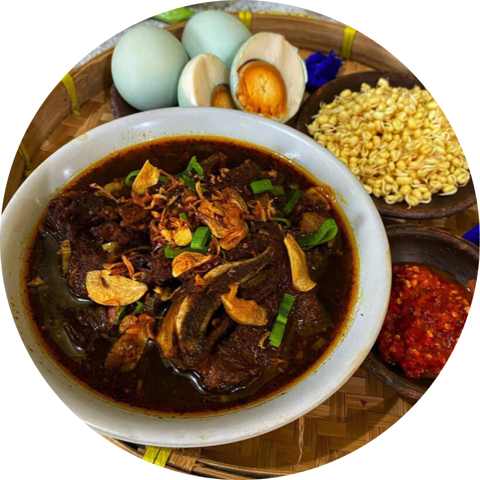
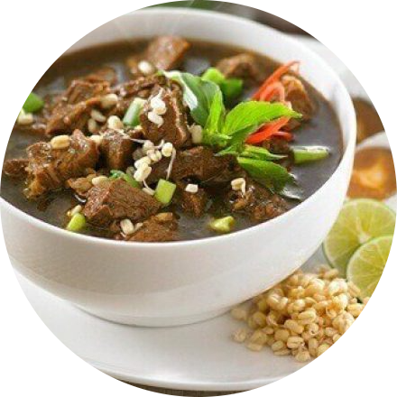

Rawon
Rawon adalah masakan khas Indonesia yang berasal dari Kabupaten Ponorogo. Rawon berupa sup daging berkuah hitam dengan campuran bumbu khas yang menggunakan kluwek, kunyit, jahe, dan lainnya.
Bahan-Bahan
500 gram daging sapi sandung lamur, cuci bersih, potong
5 lembar daun jeruk
2 batang serai, geprek
1 sdm air asam jawa
Garam, gula pasir, dan kaldu bubuk rasa sapi secukupnya
3 liter air
Bumbu halus:
5 siung bawang putih
10 siung bawang merah
5 buah keluak
4 butir kemiri, sangrai
1 cm kunyit, bakar
50 ml minyak goreng
Bahan pelengkap:
Taoge pendek
Nasi
Daun bawang, iris
Telur asin
Jeruk nipis
Sambal
Emping
Cara Membuat
1. Rebus air sampai mendidih. Masukkan daging sapi, rebus sampai empuk;
2. Masukkan bahan bumbu halus dan sedikit minyak goreng, haluskan pakai blender;
3. Tumis sampai matang bumbu halus, serai, dan daun jeruk. Masukkan bumbu ke dalam air rebusan daging;
4. Tambahkan air asam jawa, garam, gula, dan kaldu sapi. Koreksi rasa. Masak sampai daging empuk dan rasa sudah pas. Angkat dan sajikan bersama bahan pelengkap.

